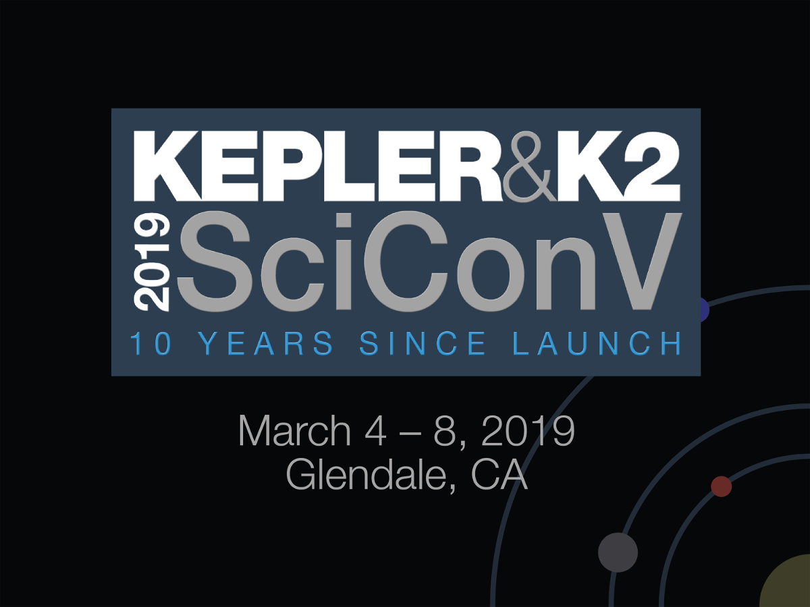

Welcome to the home page of the fifth Kepler & K2 Science Conference! The conference will be take place from March 4-8, 2019 in Glendale, California. The meeting will be a celebration of Kepler's 10 years in space. Stay tuned for further information!
Important Dates
| August 31, 2018 | registration and abstract submission open |
| November 15, 2018 | regular deadline to submit abstracts for talks, breakout sessions, and poster; deadline to apply for travel support |
| December 20, 2018 | conference schedule published |
| January 3, 2019 | conference forecast deadline (NASA participants only) |
| January 15, 2019 | late deadline to submit abstracts for posters |
| February 10, 2019 | registration and hotel reservation deadline |
| March 4-8, 2019 | Kepler & K2 Science Conference V |
Registration
There is no registration fee for this conference, however we ask that all attendees register to assist with planning. Register here by the Feb. 10, 2019 deadline.
Upon registering, participants can volunteer to judge a poster competition for students and post docs during the conference. Winners of the competition have the opportunity to give short talks about their results during the second half of the conference. Judges will rank posters of conference participants who agreed to enter the competition.
Abstract Submission
Abstracts for conference presentations should be submitted here by the Nov. 15 deadline, although abstracts for posters can continue to be submitted until the late poster only deadline of Jan. 15, 2019..
Note that Wednesday afternoon (March 6) is set aside for breakout sessions to enable the community to discuss and work on Kepler/K2 related projects. We envision these sessions will be more hands on, unconference sessions of broad interest to the community. Examples of break out sessions include panel discussions, hack activities, work meetings of large collaborations, or tutorials to use data/software products related to Kepler/K2. To submit a proposal for a breakout session, please select this on the abstract submission form.
Lodging, Parking, and Venue Information
The conference location and hotel is the Hilton Los Angeles North/Glendale & Executive Meeting Ctr located at 100 West Glenoaks Blvd, Glendale, California, 91202. A block of rooms has been reserved for March 2, 2019 - March 9, 2019. The special sleeping room rate includes free wifi and will be available until February 10, 2019 or until the group block is sold-out, whichever comes first. Rooms in the block can be reserved by following this link.
Self parking is free for this conference and for overnight guests, includes in/out privileges. The rate for valet parking is $19/day. Attendees not staying at the hotel will need to inform the attendant that they are attending the Kepler meeting to get these parking rates.
Travel Support
We have limited funding to support local costs (hotel and per diem) for a limited number of participants who would otherwise be unable to attend the meeting. Please complete this application by the Nov. 15 deadline. Applicants will receive a decision by Dec. 20.
Code of Conduct
We expect all attendees to agree with and abide by our code of conduct. Upon registration, attendees will be asked to click a box to confirm that they agree with this code. If you have concerns, suggestions, or would like to report a violation, please contact Jessie Dotson at 650-701-7040.
Participants List
A list of registered participants can be found here.
Scientific Organizing Committee
- Knicole Colón, NASA Goddard Space Flight Center (co-Chair)
- JJ Hermes, University of North Carolina at Chapel Hill (co-Chair)
- Suzanne Aigrain, University of Oxford
- Geert Barentsen, NASA Ames Research Center
- David Ciardi, Caltech/IPAC-NASA Exoplanet Science Institute
- Jessie Dotson, NASA Ames Research Center
- Dawn Gelino, Caltech/IPAC-NASA Exoplanet Science Institute
- Matt Holman, Harvard University
- Andrew Howard, Caltech
- Steve Howell, NASA Ames Research Center
- Katrien Kolenberg, KU Leuven
- Savita Mathur, Instituto de Astrofísica de Canarias
- Armin Rest, Space Telescope Science Institute
Local Organizing Committee
- Geert Barentsen, NASA Ames Research Center
- Knicole Colón, NASA Goddard Space Flight Center
- Jessie Dotson, NASA Ames Research Center
- Dawn Gelino, Caltech/IPAC-NASA Exoplanet Science Institute
- Ellen O'Leary, Caltech/IPAC-NASA Exoplanet Science Institute
Contact
If you have questions regarding the conference, please send an email to keplerscicon@ipac.caltech.edu.